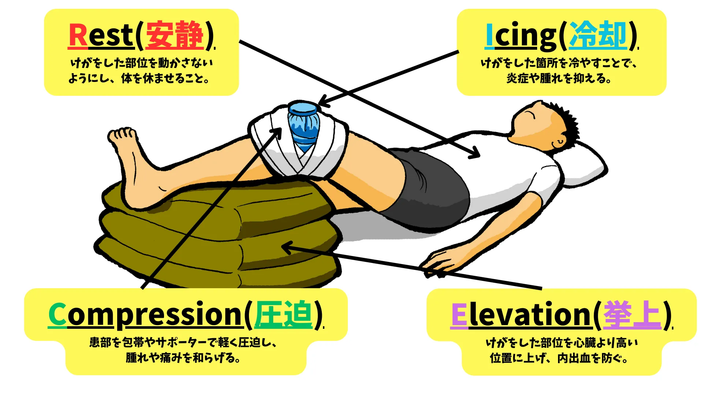

持っておくべき怪我の知識

サッカーをやっていれば必ず怪我をします。
どんなにトップレベルのプレーヤーでも、外的要因（ファールやグラウンドコンディションなど）によって引き起こされたりします。
そのような怪我をした時に、トレーナーがチームにいれば、診断から治療まで行ってもらえますが、トレーナーのいないチームが大半だと思います。
この記事では、選手が怪我をした時の応急処置と、どの医療機関を受診すればよいのかを解説します。

1. 2種類の怪我。
サッカーで発生するけがには、大きく分けて「外傷」と「障害」の2種類があります。それぞれの特徴を知ることで、適切な対応が可能になります。
外傷とは
1．外傷（Acute Injury）
外傷は、一度の外力や衝撃によって起こるけがを指します。試合中や練習中の突然のアクシデントが原因で発生することが多いです。
特徴：
・発生が急性（突然起こる）。
・原因が特定しやすい。
・痛みや腫れが即座に現れる。
例：
・捻挫（足首をひねるなど）。
・骨折（強い衝撃を受けた時）。
・打撲（相手選手と接触した時）。
対応：
すぐに応急処置（RICE）を行い、適切な医療機関を受診することが重要です。
障害とは
2．障害（Overuse Injury）
障害は、は、繰り返しの動作や負担の蓄積によって起こるけがを指します。外傷とは異なり、症状が徐々に進行していくのが特徴です。
特徴：
・発生が慢性（時間をかけて悪化する）。
・原因が蓄積した負荷。
・初期は軽い痛みや違和感から始まり、次第に悪化する。
例：
・シンスプリント（すねの痛み）。
・オスグッド（成長期における膝下の痛み）。
・疲労骨折（同じ部位に継続的に負荷がかかることで生じる骨折）。
対応：
練習量や頻度を調整し、負担を減らすことが第一。障害にならないよう早期発見/治療を目指し、違和感が出始めた時点で適切な医療機関を受診することが重要です。
2. 怪我をした時の対応。
応急処置（RICE）

RICEは、捻挫や打撲などの急性外傷に対する基本的な応急処置を指す頭文字（Rest, Icing, Compression, Elevation）です。この方法は、けがの悪化を防ぎ、回復を早めるために効果的です。
1．Rest(安静)
けがをした部位を動かさないようにし、体を休ませること。
目的
・けがの悪化を防ぐ。
・血流を抑え、腫れや炎症を最小限にする。
方法
・けがをした部位を使用しない（走ったり負荷をかけたりしない）。
・必要に応じて松葉杖やサポーターを使う。
2．Icing(冷却)
けがをした箇所を冷やすことで、炎症や腫れを抑える。
目的
・炎症の抑制。
・痛みの軽減。
方法
・氷袋やアイスパックを使用（直接皮膚に触れないよう、タオルを巻く）。
・15〜20分程度冷却し、1時間間隔で繰り返す。
・過冷却を避ける（凍傷のリスクがあるため）。
3．Compression(圧迫)
患部を包帯やサポーターで軽く圧迫する。
目的
・腫れを防ぐ。
・出血を抑える。
方法
・弾性包帯を使い、きつすぎない程度に巻く（血流が悪くならないよう注意）。
・痛みやしびれを感じる場合はすぐに緩める。
4．Elevation(挙上)
けがをした部位を心臓より高い位置に上げる。
目的
・血流を減少させ、腫れを抑える。
・炎症を軽減する。
方法
・クッションや枕で足や腕を持ち上げる。
・リラックスした状態で行う。
＜補足：RICEに関連する注意点＞
1．早期受診の重要性
・RICEは応急処置であり、治療ではありません。けがの程度によっては速やかに医療機関を受診してください（骨折や激しい痛みがある場合など）。
2．48時間以内に適用
・RICE処置は、特にけがの直後から48時間以内に行うと効果的です。
3．冷やしすぎや圧迫のしすぎに注意
・過剰な処置はかえって逆効果になる可能性があります。適度な強度を心がけましょう。
どの医療機関を受診すればいいの？
子どもがけがをしたとき、どの医療機関を受診すればよいのか迷うこともありますよね。けがの種類や症状に応じて、適切な診療科や施設を選ぶことで、より効果的な治療を受けることができます。以下に、症状ごとの受診の目安をまとめました。
1．軽い打撲や捻挫の場合
目安となる症状
・腫れや痛みがあるが、動かせる。
・傷が浅い、出血が少ない。
受診する医療機関
・整形外科：
軽いけがでも適切な固定や処置が必要な場合があります。捻挫や打撲の治療に詳しいです。
・一般の外科：
小規模な外傷で、整形外科のない地域の場合に適しています。
備考
RICE処置を施した後でも痛みが続く場合や、腫れがひどくなる場合は受診しましょう。
2．骨折が疑われる場合
目安となる症状
・骨が変形している。
・激しい痛みで動かせない。
・腫れや内出血が広範囲に及ぶ。
受診する医療機関
・整形外科（必須）：
レントゲンやCTなどの検査設備がある医療機関を選びましょう。骨折の診断と固定が行えます。
備考
骨折の疑いがある場合は、移動時に患部を動かさないよう注意してください。
3．切り傷や裂傷の場合
目安となる症状
・出血が止まらない。
・傷口が深く、縫合が必要な可能性がある。
・異物が刺さっている。
受診する医療機関
・外科：
縫合や感染症予防の処置を行うのに適しています。
・形成外科（傷が顔や関節など目立つ部位の場合）：
傷跡が目立たないよう、より専門的な処置を受けられます。
4．頭を打った場合
目安となる症状
・意識が一時的に消失した。
・吐き気や嘔吐がある。
・頭痛が続く。
受診する医療機関
・脳神経外科：
頭部のけがに詳しく、CTやMRIで詳細な診断が可能です。
・救急外来（緊急性が高い場合）：
特に意識障害や重篤な症状がある場合、24時間対応の救急外来を受診してください。
備考
頭を打った後は症状が遅れて現れることがあるため、注意深く観察してください。
5．繰り返す痛みや慢性的な症状の場合
目安となる症状
・繰り返しの練習で特定の部位に痛みが出る。
・腱や筋肉が炎症を起こしていると感じる。
受診する医療機関
・スポーツ整形外科：
スポーツ選手や運動部の子どもが多く通う専門医で、リハビリや予防指導も受けられます。
備考
障害（Overuse Injury）は早期のケアが重要です。適切な診断を受けることで、練習や試合への復帰がスムーズになります。
3. まとめ。
- 外傷：転倒や衝突など、外力による怪我。骨折や捻挫、打撲などがあり、早めの処置が必要です。
- 障害：繰り返しの動作で起こる怪我。オスグッドやシンスプリントなどがあり、休養が大切です。
- RICE処置：Rest（安静）、Icing（冷却）、Compression（圧迫）、Elevation（挙上）が応急処置の基本です。
- 適切な医療機関を選びましょう。
このサイトでは、チーム練習と個人練習の2つに分けて、厳選された練習メニューをまとめています。
悪い意味での「伝統的な練習」への疑問。ただボールを蹴るだけの自主練。敗れる理由もわからない無策のチーム。
そんな悩みを解決するためにこのサイトを作り上げました。
蹴練場は日本全国のサッカーファミリーを応援しています。